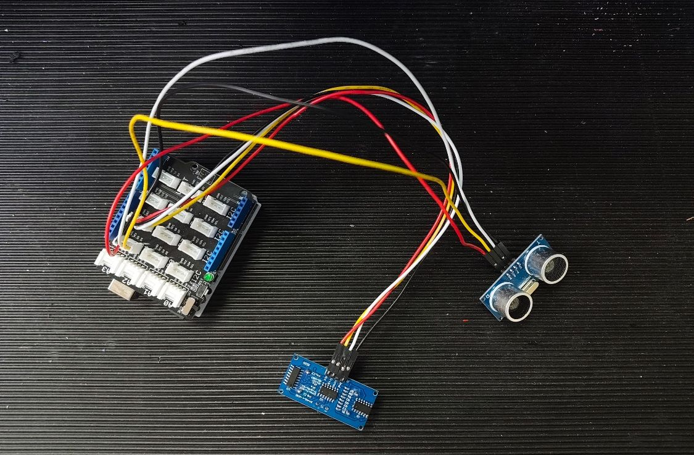
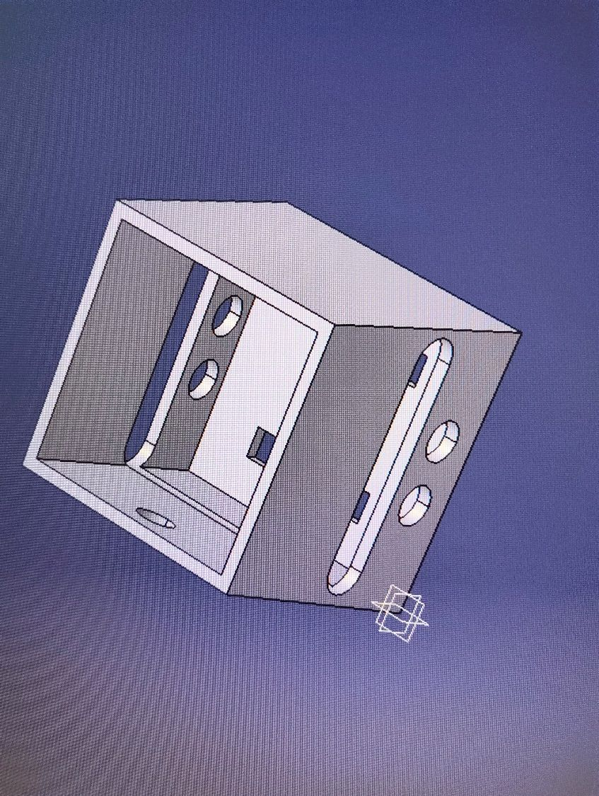
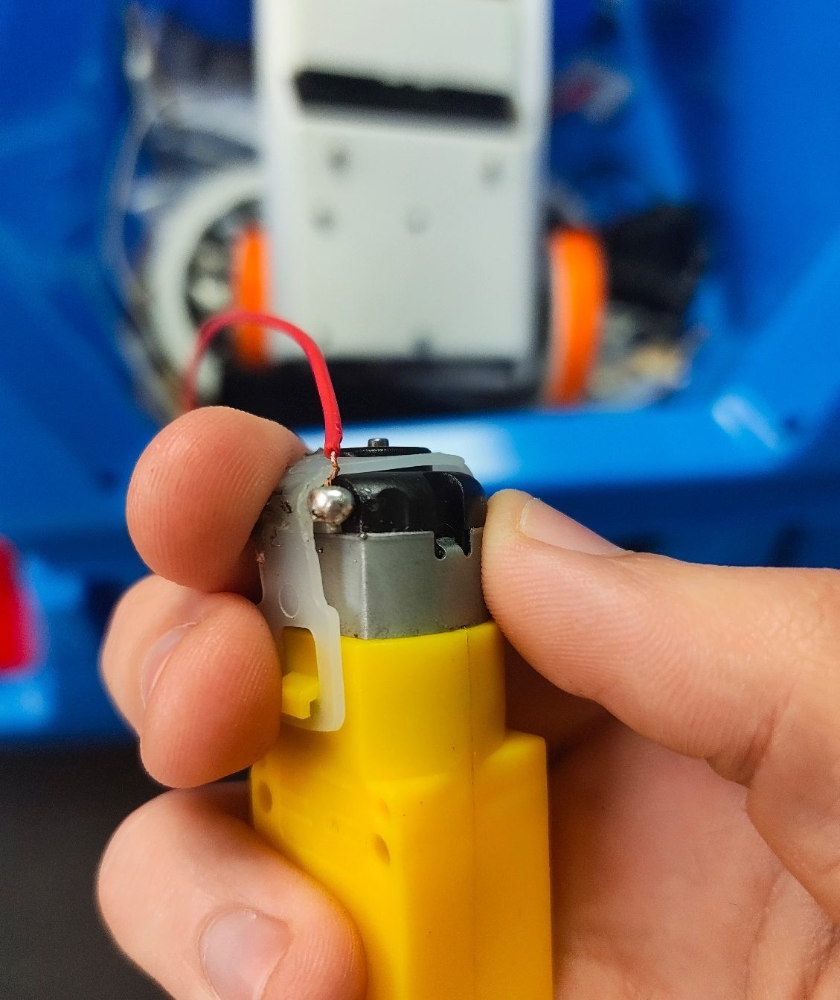
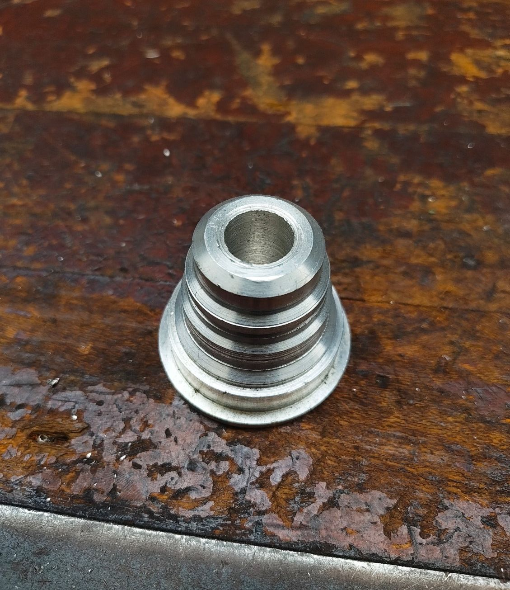
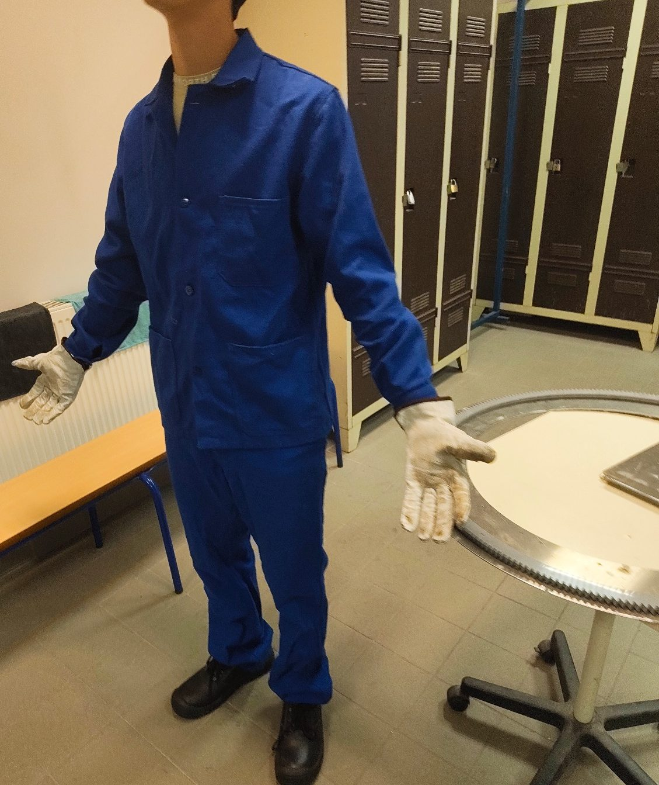
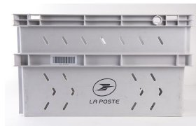
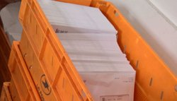
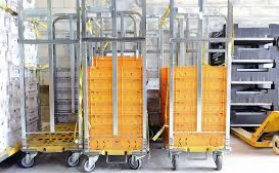
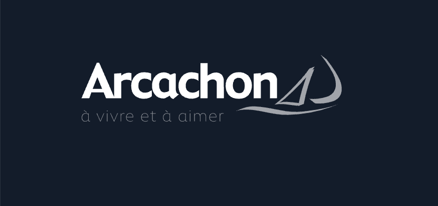

Concevoir
- CAO : CATIA V5, Onshape
- Impression 3D
- Arduino, capteurs, câblage
Un prototype mécatronique conçu, imprimé et câblé de A à Z.
Futur technicien en conception mécanique — Arts et Métiers (ENSAM)
École Nationale Supérieure d'Arts et Métiers — campus de Bordeaux-Talence
Je suis en 2e année du Bachelor de Technologie d'Arts et Métiers, spécialité mécanique-production.
J'aime voir une idée passer de l'écran à l'objet : la modéliser en CAO, la fabriquer, la mesurer, la faire fonctionner. Mes projets m'ont fait toucher à la conception, à l'usinage, à l'impression 3D et à l'électronique embarquée.
Quatre semaines comme opérateur dans une usine de tri m'ont aussi appris qu'une bonne conception pense aux personnes qui l'utilisent au quotidien.
Je suis curieux de tous les secteurs de la mécanique. Le son et la hi-fi sont une passion que j'aimerais un jour relier à mon métier.
Un prototype mécatronique conçu, imprimé et câblé de A à Z.
Une pièce étagée en aluminium usinée au tour, cotes contrôlées.
5 postes tenus en 4 semaines sur une plateforme de tri industrielle.
Bonjour, je m'appelle Paul Signe. Je suis en deuxième année de Bachelor de Technologie à Arts et Métiers, sur le campus de Bordeaux-Talence. Je recherche un stage technicien de 12 semaines à partir du 12 avril 2027, que j'aimerais prolonger en alternance comme assistant ingénieur.
D'abord, je sais concevoir. Sous CATIA V5, j'ai modélisé le boîtier d'un prototype mécatronique, je l'ai imprimé en 3D puis câblé avec une carte Arduino, un capteur à ultrasons et un afficheur. J'aime voir une idée devenir un objet qui fonctionne.
Ensuite, je pense fabrication. À l'atelier, j'ai réalisé au tour conventionnel une pièce étagée en aluminium, en lisant le plan et en contrôlant mes cotes. Concevoir en sachant comment une pièce sera fabriquée, c'est ce que je veux apporter à un bureau d'études ou à un service méthodes.
Enfin, je connais le terrain. Pendant quatre semaines, j'ai été opérateur à la Plateforme Industrielle Courrier de La Poste à Cestas, sur cinq postes, dans un site qui trie jusqu'à deux millions de plis par jour. J'y ai compris que toute une chaîne dépend de chaque maillon. Animer un groupe de douze enfants et accompagner un enfant autiste m'ont aussi appris le sang-froid et l'écoute.
Et après ? Je veux devenir ingénieur en conception. Le son et la hi-fi me passionnent, mais c'est la mécanique qui m'anime, quel que soit le secteur. Ce stage serait l'occasion de mettre ces compétences au service de votre équipe, et l'alternance la suite logique pour m'investir chez vous sur la durée.
Objectif : stage technicien de 12 semaines, du 12 avril au 2 juillet 2027, en conception, méthodes ou production mécanique, avec poursuite possible en alternance (assistant ingénieur).
Concevoir.
Fabriquer.
Tester.

Sélectionnez un projet en cliquant sur sa carte.
Poste · MissionÉtudiant concepteur. Concevoir, imprimer et câbler un boîtier mécatronique équipé d'un capteur à ultrasons et d'un afficheur.


Poste · MissionÉtudiant opérateur sur tour conventionnel. Réaliser une pièce de révolution étagée en aluminium, conforme au plan.


Sélectionnez une expérience en cliquant sur sa carte.
19 janvier – 18 février 2026 · 4 semaines
Poste · MissionStage ouvrier, équipe du matin (6 h 30 – 13 h 52). Faire tourner la chaîne de tri du courrier, des camions jusqu'aux centres de distribution.



2024 – 2026 · 2 saisons de 4 semaines

Les Mille PotesPoste · MissionAnimateur. Encadrer et animer un groupe de 12 enfants de 7 à 11 ans en assurant leur sécurité physique et morale.
2025 · x h / semaine pendant x semaines
Poste · MissionGarde d'enfant. Assurer la sécurité, le bien-être et le développement d'un enfant avec troubles du spectre autistique (TSA), non verbal.
Pour chaque expérience : ce que je sais, ce que je sais faire, comment je travaille, une situation concrète et ce que j'apporterai en stage.
← Faites défiler le tableau →
| Expérience | Activités | Savoirs | Savoir-faire | Savoir-être | Situation concrète | Ce que j'apporte en stage |
|---|---|---|---|---|---|---|
| Prototype mécatroniqueProjet Arts et Métiers | Modéliser le boîtier, l'imprimer en 3D, câbler l'Arduino, le capteur et l'afficheur, programmer | Principe du capteur à ultrasons (temps de vol), bases de C/C++, tolérances d'impression | CAO sous CATIA V5, préparation d'impression, câblage, soudure, essais | Persévérance, méthode de débogage | Mesures instables du capteur : vérification du câblage puis filtrage logiciel des valeurs | Prototypage et essais en bureau d'études |
| Usinage conventionnelAtelier Arts et Métiers | Dresser, charioter, réaliser gorges et chanfreins, percer et aléser, contrôler | Conditions de coupe, cotation et tolérances, lecture de plan | Régler un tour, mesurer au pied à coulisse | Rigueur, vigilance, respect des consignes de sécurité | Passes de finition prudentes pour garder l'alésage dans la tolérance | Concevoir des pièces fabricables, dialoguer avec l'atelier |
| Opérateur de productionLa Poste · 4 semaines | Alimenter les machines de tri, débaquer, étiqueter, trier à la main, scanner les conteneurs | Flux d'une chaîne automatisée, règles de sécurité, risques de TMS et ergonomie | Tenir une cadence, dégager un bourrage en sécurité, utiliser un terminal de scan | Ponctualité (prise de poste à 6 h 30), endurance, esprit d'équipe | Une heure à deux au lieu de trois au dépalétiseur : prioriser les conteneurs pour ne pas arrêter les machines | Concevoir ou améliorer un poste en connaissant les contraintes des opérateurs |
| Animateur BAFALes Mille Potes, Arcachon | Animer un groupe de 12 enfants de 7 à 11 ans, construire les plannings, gérer la vie quotidienne | Réglementation des accueils collectifs de mineurs, bases de pédagogie | Organiser, planifier une activité, conduire un groupe | Patience, écoute, adaptabilité, communication | Résolution d'un conflit entre deux enfants, puis spectacle de fin de centre réussi | Travailler en équipe, gérer les imprévus |
| Garde d'enfant avec TSAParticulier employeur | Maintenir les routines, aider aux repas, communiquer par pictogrammes, accompagner les sorties | Bases sur l'autisme, communication alternative | Appliquer un protocole précis, observer finement | Sang-froid, empathie, vigilance continue | Surcharge sensorielle en extérieur désamorcée en restant calme et en appliquant la routine prévue | Respecter strictement une procédure, garder son calme sous pression |
La plaquette de ma formation, mes références et ce qui me fait avancer.
Bachelor de Technologie, spécialité mécanique-production, Arts et Métiers.
Ouvrir le PDF ↗Stage ouvrier à La Poste, plateforme de Bordeaux-Cestas : M. Franck Menanteau, Responsable d'Équipe Courrier, tuteur de stage.
Ajouter la lettre de recommandation (PDF)
Ce qui me fait avancer, en images, juste en dessous.
Voir le vision board ↓« Turn ideas into reality. »
L'ingénierie mécanique au service de l'objet bien fait.
Toute la bande audible : de la mécanique des membranes à l'acoustique des pièces.
La hi-fi est ma passion à long terme, mais je m'épanouis dans toute la mécanique : conception, méthodes, production, quel que soit le produit.
Une question, une offre de stage ou d'alternance ? Écrivez-moi, je réponds rapidement.